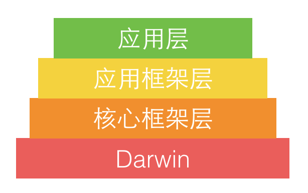
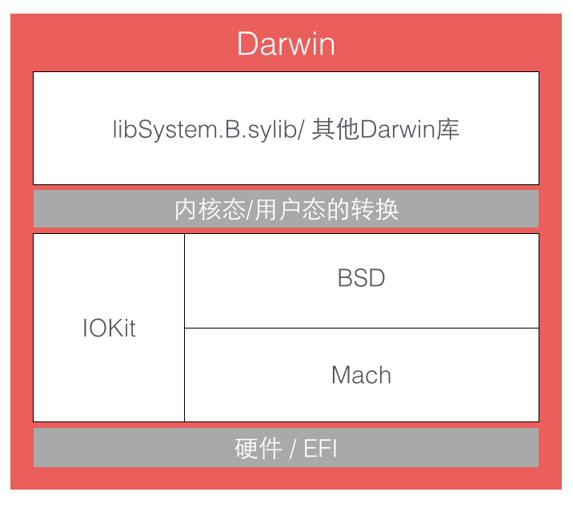
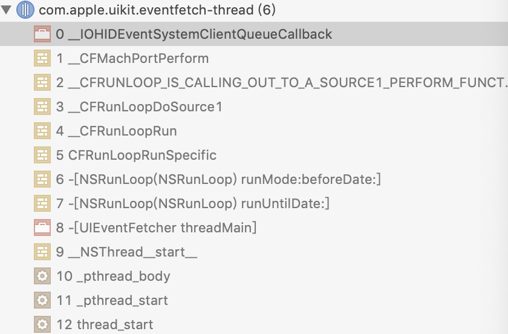

深入理解RunLoop
学习自Y神的深入理解RunLoop
RunLoop的概念
关键点在于:如何管理事件/消息，如何让线程在没有消息处理时休眠避免资源消耗、而在消息到来时被立刻唤醒
所以,RunLoop实际上就是一个对象，这个对象管理其需要处理的事件和消息，并提供了一个入口函数执行上面EventLoop逻辑，线程处理了这个函数后，就会一直处于函数内部“接收消息->等待->处理”的循环中，知道循环结束，函数返回
系统提供了两个对象:NSRunLoop和CFRunLoopRef。CFRunLoopRef是在CoreFoundation框架内的，提供了纯C函数的API，这些API都是线程安全的(内部有加锁操作);NSRunLoop是基于CFRunLoopRef的封装，提供了面对对象的API，但是这些API不是线程安全的
线程安全简而言之就是，一个方法或者一个实例在多线程环境中使用而不会出现问题的
RunLoop和线程的关系
iOS开发中有两个线程对象pthread和NSThread
苹果不允许直接创建RunLoop，但是提供了两个自动获取的函数:CFRunLoopGetMain() 和 CFRunLoopGetCurrent()
线程和runloop之间是一一对应的，其关系保存在一个全局的字典之中，线程刚创建的时候是没有runLoop的，如果不主动获取，就一直不会有，其创建发生在第一次获取时，RunnLoop销毁发生在线程结束时。除了主线程，你只能在线程的内部获取其RunLoop
RunLoop对外的接口
在CF中 RunLoop有五个类
CFRunLoopRef
CFRunLoopModeRef
CFRunLoopSourceRef
CFRunLoopTimerRef
CFRunLoopObserverRef
一个RunLoop中包含若干个Mode，每个Mode中包含若干个Source/Timer/Observer，每次调用RunLopp的主函数，只能指定其中一个Mode,即currentMode，如果需要切换Mode，只能退出Loop，再重新指定一个Mode进入，这样就可以分割不同组的Source/Timer/observer,互不影响
CFRunLoopSourceRef是事件产生的地方，source有两个版本：source0和Source1
- source0，之所以这么命名是因为上下文结构的版本字段为0，由应用程序管理，只包含了一个回调指针(函数指针)，不能主动触发事件。使用时，需要先调用
CFRunLoopSourceSignal(source)将source标记为待处理，然后调用CFRunLoopWakeUp(runloop)来唤醒RunLoop唤醒RunLoop，让其处理这个事件 - source1，由RunLoop和内和管理，包含了一个mach_port和一个回调指针，被用于内核和其他线程互相发送消息。这种source能主动唤醒RunLoop的线程
CFRunLoopTimerRef是一个特殊的源，基于时间的触发器，和NSTimer是toll-free bridged的,因此二者是可以混用替代的，包含一个时间长苏和回调指针。加入RunLoop后，RunLoop会注册对应时间点，当时间到了，就会被唤醒执行回调；
CFRunLoopObserverRef观察者，每个Observer都包含一个回调，当RunLoop状态发生改变是，就通过回调接受到此变化
typedef CF_OPTIONS(CFOptionFlags, CFRunLoopActivity) {
kCFRunLoopEntry = (1UL << 0), // 即将进入Loop
kCFRunLoopBeforeTimers = (1UL << 1), // 即将处理 Timer
kCFRunLoopBeforeSources = (1UL << 2), // 即将处理 Source
kCFRunLoopBeforeWaiting = (1UL << 5), // 即将进入休眠
kCFRunLoopAfterWaiting = (1UL << 6), // 刚从休眠中唤醒
kCFRunLoopExit = (1UL << 7), // 即将退出Loop
};
这三种被统称为mode item，一个item可以被同时加入多个Mode，但是一个item被重复加入同一个mode不会有效果，如果mode中一个item没有就会直接退出，不进入循环
RunLoop的Mode
CFRunLoopMode 和 CFRunLoop 的结构大致如下：
struct __CFRunLoopMode {
CFStringRef _name; // Mode Name, 例如 @"kCFRunLoopDefaultMode"
CFMutableSetRef _sources0; // Set
CFMutableSetRef _sources1; // Set
CFMutableArrayRef _observers; // Array
CFMutableArrayRef _timers; // Array
...
};
struct __CFRunLoop {
CFMutableSetRef _commonModes; // Set
CFMutableSetRef _commonModeItems; // Set<Source/Observer/Timer>
CFRunLoopModeRef _currentMode; // Current Runloop Mode
CFMutableSetRef _modes; // Set
...
};
CF中有一种特殊的“假”mode即common mode，允许你将一个item添加到多个mode中；如果要指定commod模式，使用kCFRunLoopCommonModes常量作为模式名； 一个mode可以通过CFRunLoopAddCommonMode将mode的名字添加到commonModes中，每个runLoop都有自己独立的common模式集。每当RunLoop内容发生变化时，RunLoop会自动将_commonModeItems里的item同步到有"common"标记的mode
CFRunLoop对外暴露的管理 Mode 接口
CFRunLoopAddCommonMode(CFRunLoopRef runloop, CFStringRef modeName);
//指定当前线程的CFRunLoop对象 运行的mode
CFRunLoopRunResult CFRunLoopRunInMode(CFRunLoopMode mode, CFTimeInterval seconds, Boolean returnAfterSourceHandled)
Mode中管理Item的接口
CFRunLoopAddSource(CFRunLoopRef rl, CFRunLoopSourceRef source, CFStringRef modeName);
CFRunLoopAddObserver(CFRunLoopRef rl, CFRunLoopObserverRef observer, CFStringRef modeName);
CFRunLoopAddTimer(CFRunLoopRef rl, CFRunLoopTimerRef timer, CFStringRef mode);
CFRunLoopRemoveSource(CFRunLoopRef rl, CFRunLoopSourceRef source, CFStringRef modeName);
CFRunLoopRemoveObserver(CFRunLoopRef rl, CFRunLoopObserverRef observer, CFStringRef modeName);
CFRunLoopRemoveTimer(CFRunLoopRef rl, CFRunLoopTimerRef timer, CFStringRef mode);
你只能通过mode name来操作内部的mode，当你传入一个新的mode name,但RunLoop内部没有对应 mode时，RunLoop会自动帮你创建对应的 CFRunLoopModeRef。对于一个RunLoop来说，其内部的mode只能增加不能删除。
苹果公开提供的 Mode 有两个：kCFRunLoopDefaultMode (NSDefaultRunLoopMode) 和 UITrackingRunLoopMode，你可以用这两个Mode Name来操作其对应的Mode。主线程的RunLoop是预置这两个的Mode的
同时苹果还提供了一个操作Common标记的字符串：kCFRunLoopCommonModes (NSRunLoopCommonModes)，你可以用这个字符串来操作Common Items，或标记一个Mode为 “Common”。使用时注意区分这个字符串和其他mode name。
RunLoop的内部逻辑

实际上 RunLoop 就是这样一个函数，其内部是一个 do-while 循环。当你调用 CFRunLoopRun() 时，线程就会一直停留在这个循环里；直到超时或被手动停止，该函数才会返回。
底层实现

应用层: 用户能接触到的图形应用，例如:Spotlight、Aqua、SpringBoard等
应用框架层: 开发人员接触到的Cocoa等框架
核心框架层: 核心框架、OpenGL等内容
Darwin 即操作系统的核心，包括系统内核、驱动、Shell 等内容，

在硬件层上面的三个组成部分：Mach、BSD、IOKit (还包括一些上面没标注的内容)，共同组成了 XNU 内核。
XNU 内核的内环被称作 Mach，其作为一个微内核，仅提供了诸如处理器调度、IPC (进程间通信)等非常少量的基础服务。
BSD 层可以看作围绕 Mach 层的一个外环，其提供了诸如进程管理、文件系统和网络等功能。
IOKit 层是为设备驱动提供了一个面向对象(C++)的一个框架。
在 Mach 中，所有的东西都是通过自己的对象实现的，进程、线程和虚拟内存都被称为”对象”。和其他架构不同， Mach 的对象间不能直接调用，只能通过消息传递的方式实现对象间的通信。”消息”是 Mach 中最基础的概念，消息在两个端口 (port) 之间传递，这就是 Mach 的 IPC (进程间通信) 的核心。
为了实现消息的发送和接收，mach_msg() 函数实际上是调用了一个 Mach 陷阱 (trap)，即函数mach_msg_trap()，陷阱这个概念在 Mach 中等同于系统调用。当你在用户态调用 mach_msg_trap() 时会触发陷阱机制，切换到内核态；内核态中内核实现的 mach_msg() 函数会完成实际的工作，
苹果用RunLoop实现的功能
系统默认注册了5个Mode:
- kCFRunLoopDefaultMode: App的默认 Mode，通常主线程是在这个 Mode 下运行的。
- UITrackingRunLoopMode: 界面跟踪 Mode，用于 ScrollView 追踪触摸滑动，保证界面滑动时不受其他 Mode 影响
- UIInitializationRunLoopMode: 在刚启动 App 时第进入的第一个 Mode，启动完成后就不再使用
- GSEventReceiveRunLoopMode: 接受系统事件的内部 Mode，通常用不到
- kCFRunLoopCommonModes: 这是一个占位的 Mode，没有实际作用
APP中常看到的RunLoop函数:
/// 1. 通知Observers，即将进入RunLoop
/// 此处有Observer会创建AutoreleasePool: _objc_autoreleasePoolPush();
__CFRUNLOOP_IS_CALLING_OUT_TO_AN_OBSERVER_CALLBACK_FUNCTION__(kCFRunLoopEntry);
do {
/// 2. 通知 Observers: 即将触发 Timer 回调。
__CFRUNLOOP_IS_CALLING_OUT_TO_AN_OBSERVER_CALLBACK_FUNCTION__(kCFRunLoopBeforeTimers);
/// 3. 通知 Observers: 即将触发 Source (非基于port的,Source0) 回调。
__CFRUNLOOP_IS_CALLING_OUT_TO_AN_OBSERVER_CALLBACK_FUNCTION__(kCFRunLoopBeforeSources);
__CFRUNLOOP_IS_CALLING_OUT_TO_A_BLOCK__(block);
/// 4. 触发 Source0 (非基于port的) 回调。
__CFRUNLOOP_IS_CALLING_OUT_TO_A_SOURCE0_PERFORM_FUNCTION__(source0);
__CFRUNLOOP_IS_CALLING_OUT_TO_A_BLOCK__(block);
/// 6. 通知Observers，即将进入休眠
/// 此处有Observer释放并新建AutoreleasePool: _objc_autoreleasePoolPop(); _objc_autoreleasePoolPush();
__CFRUNLOOP_IS_CALLING_OUT_TO_AN_OBSERVER_CALLBACK_FUNCTION__(kCFRunLoopBeforeWaiting);
/// 7. sleep to wait msg.
mach_msg() -> mach_msg_trap();
/// 8. 通知Observers，线程被唤醒
__CFRUNLOOP_IS_CALLING_OUT_TO_AN_OBSERVER_CALLBACK_FUNCTION__(kCFRunLoopAfterWaiting);
/// 9. 如果是被Timer唤醒的，回调Timer
__CFRUNLOOP_IS_CALLING_OUT_TO_A_TIMER_CALLBACK_FUNCTION__(timer);
/// 9. 如果是被dispatch唤醒的，执行所有调用 dispatch_async 等方法放入main queue 的 block
__CFRUNLOOP_IS_SERVICING_THE_MAIN_DISPATCH_QUEUE__(dispatched_block);
/// 9. 如果如果Runloop是被 Source1 (基于port的) 的事件唤醒了，处理这个事件
__CFRUNLOOP_IS_CALLING_OUT_TO_A_SOURCE1_PERFORM_FUNCTION__(source1);
} while (...);
/// 10. 通知Observers，即将退出RunLoop
/// 此处有Observer释放AutoreleasePool: _objc_autoreleasePoolPop();
__CFRUNLOOP_IS_CALLING_OUT_TO_AN_OBSERVER_CALLBACK_FUNCTION__(kCFRunLoopExit);
1. AutoreleasePool
App启动后，苹果在主线程RunLoop中注册了两个Observer，回调为_wrapRunLoopWithAutoreleasePoolHandler()
第一个Observer是在进入Loop时(Entry)，回调内部会调用_objc_autoreleasePoolPush（）创建自动释放池，其order是-2147483647，优先级最高，保证自动释放池在其他回调之前
第二个Observer监视两个事件: BeforeWaiting(准备进入休眠) 时调用_objc_autoreleasePoolPop() 和 _objc_autoreleasePoolPush() 释放旧的池并创建新池；Exit(即将退出Loop) 时调用 _objc_autoreleasePoolPop() 来释放自动释放池。这个Observer的order是 2147483647，优先级最低，保证其释放池子发生在其他所有回调之后。
主线程执行的代码，通常写在诸如事件回调、Timer回调内。这些回调会被RunLoop创建的Autorelease环绕，所以不会出现泄漏
2.事件响应
Source1(基于mach port)用来接收系统事件，回调函数为__IOHIDEventSystemClientQueueCallback()
当有一个硬件事件(触摸/锁屏/摇晃等)，先由IOKit.framework生成一个IOHIDEvent事件，并由SpringBoard接收详细信息;然后由mach port转发给需要的App进程,runLoop中Source1就会触发回调__IOHIDEventSystemClientQueueCallback()回调内调用Source0，Source0触发_UIApplicationHandleEventQueue()将IOHIDEvent包装为UIEvent进行处理分发。
可以加一个__IOHIDEventSystemClientQueueCallback()的symblol breakpoint看一下

3.手势识别
当上面的_UIApplicationHandleEventQueue()识别了一个手势时，其首先会调用Cancel将当前的touchesBegin/Move/End系列回调打断。随后系统将对应的UIGestureRecognizer标记为待处理。
苹果注册了一个Observer来监测BeforeWaiting事件，回调为_UIGestureRecognizerUpdateObserver()会获取所有被标记为未处理的GestureRecognizer，并执行GestureRecognizer
4.界面更新
当在操作UI时，当一个UIView/CALayer改变，就会被标记为待处理，提交到全局容器中。
苹果注册了一个Observer监听BeforeWating和Exit事件，回调_ZN2CA11Transaction17observer_callbackEP19__CFRunLoopObservermPv()回调内将所有待处理的UIView/CALayer进行绘制或者调整，更新UI界面
5.定时器
一个NSTimer注册到RunLoop后，RunLoop会为其重复的时间点注册好事件。RunLoop为了节省资源，不会再非常准确的时间回调Timer。Timer有Tolerance属性，标识当前时间点到了之后允许多大的误差，如果执行了一个很长的任务，这个时间点被错过，那么这个时间点也会跳过去，不执行。
NSTimer使用XUN内核的mk_timer驱动
6.PerformSelector
performSelecter:afterDelay:其实内部也是创建一个Timer添加到RunLoop中，如果当前线程没有RunLoop，则这个方法也会失效
7.GCD
dispatch_async(dispatch_get_main_queue(), block)向主线程发送消息时，libDispatch向主线程RunLoop发送消息，主线程被唤醒，从消息中去的block，在__CFRUNLOOP_IS_SERVICING_THE_MAIN_DISPATCH_QUEUE__（）中执行这个block。
仅限于diapatch到主线程 到其他线程还是呦libDispatch处理